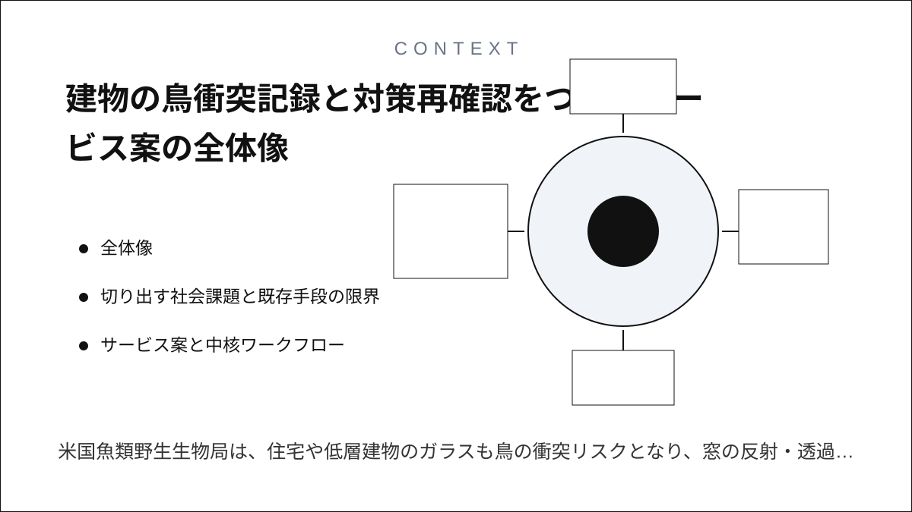
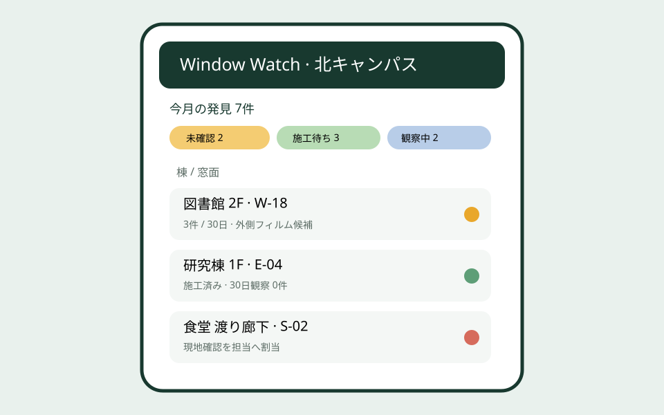
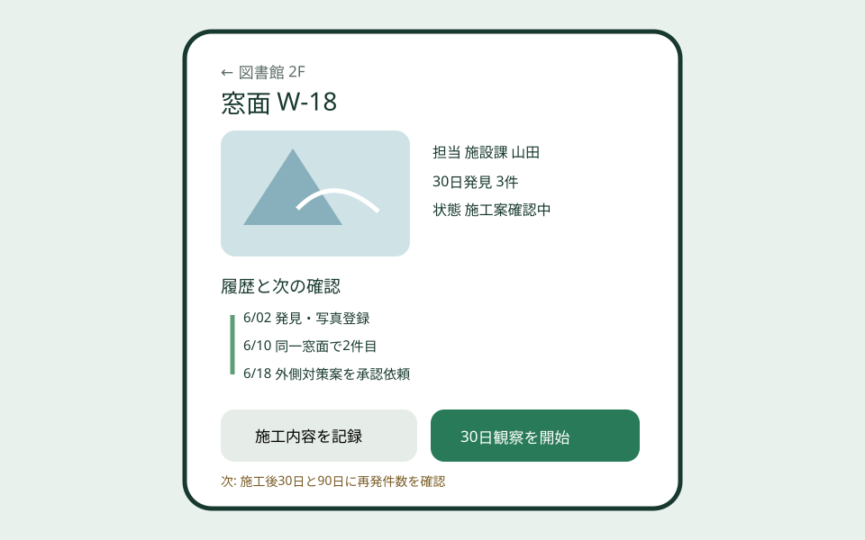
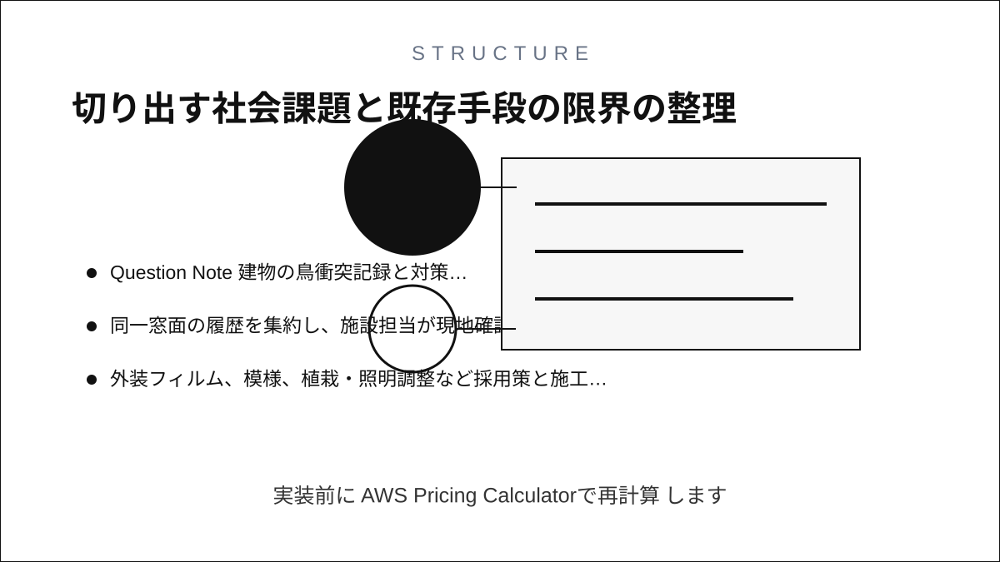
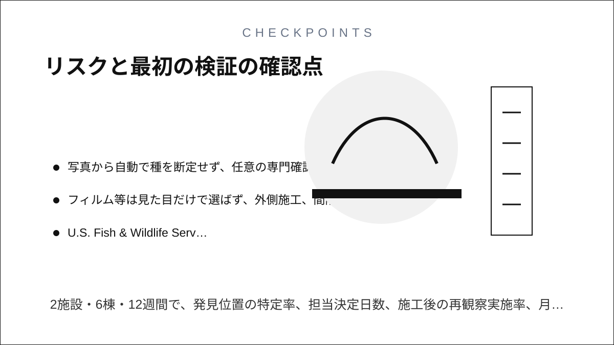

Question Note
建物の鳥衝突記録と対策再確認をつなぐサービス案



全体像
米国魚類野生生物局は、住宅や低層建物のガラスも鳥の衝突リスクとなり、窓の反射・透過や照明への対策が必要だと案内しています。切り出す課題は種の全国調査ではなく、同じ窓面での発見、施設担当への連絡、対策選定、施工、施工後の再観察がつながらないことです。

切り出す社会課題と既存手段の限界
初年度は大学、小規模オフィス群、動物園など5〜20棟を管理する施設に限定します。
| 現場課題 | 結果 | 既存手段の限界 |
|---|---|---|
| 発見位置が「玄関付近」だけ | 繰り返す窓面を特定できない | メールは窓面コードと履歴を束ねない |
| 清掃・施設・環境担当が分かれる | 連絡後の担当と期限が消える | チャットは対策の状態遷移が弱い |
| 施工後の確認がない | 効果の薄い対策が残る | 表計算は写真と再発率を比較しにくい |
サービス案と中核ワークフロー
- 清掃員や職員が棟・階・窓面コード、日時、写真、発見状況を記録する。
- 同一窓面の履歴を集約し、施設担当が現地確認の優先度を付ける。
- 外装フィルム、模様、植栽・照明調整など採用策と施工日を登録する。
- 施工後30日・90日に再観察し、再発件数と状態を比較する。
アプリは野鳥の救護判断や建築設計を代替しません。救護は地域の行政・専門機関の案内に従い、施工はガラス、避難、安全、景観条件を施設責任者が確認します。
100万円規模に抑えた市場設定
| 到達可能市場 | 教育・展示・事業施設50組織へ環境担当経由で提案 | 地域ごとの導入支援 |
|---|---|---|
| 月額 | 16組織 × 5,000円 × 12か月 | 960,000円 |
| 初期設定 | 6組織 × 10,000円 | 60,000円 |
| 初年度売上 | 合計 | 1,020,000円 |
AWSシステム要件と支出
東京リージョン、1 USD = 150円、無料枠・クレジット除外、16組織、200 MAU、窓面4,000件、写真30GBの概算です。実装前にAWS Pricing Calculatorで再計算します。
| AWSリソース | 用途 | 想定使用量 | 月額 | 年額 |
|---|---|---|---|---|
| Amazon S3 | Web画面、窓面写真、施工写真 | 30GB | 800円 | 9,600円 |
| Amazon CloudFront | 認証済み画像の配信 | 月25GB | 800円 | 9,600円 |
| Amazon Cognito | 発見者・施設責任者・施工者認証 | 200 MAU | 300円 | 3,600円 |
| Amazon API Gateway | 発見、割当、施工、再観察API | 月5万件 | 300円 | 3,600円 |
| AWS Lambda | 再発集計、期限通知、月次報告 | 月6万実行 | 400円 | 4,800円 |
| Amazon DynamoDB | 組織、建物、階、窓面コード、方位、発見日時、写真参照、発見状態、担当、対策候補、承認、施工、費用、30日・90日再観察、監査履歴 | 4GB、月12万読書き | 900円 | 10,800円 |
| Amazon SES | 現地確認、施工期限、再観察通知 | 月1,500通 | 200円 | 2,400円 |
| Amazon CloudWatch | 画像登録と通知失敗の監視 | ログ2GB、6アラーム | 700円 | 8,400円 |
| AWS Backup | 窓面台帳と履歴の日次復旧 | 12GB | 500円 | 6,000円 |
| AWS Budgets | 画像保存・配信費の上限通知 | 2予算 | 150円 | 1,800円 |
| Amazon Route 53 | 独自ドメインのDNS | 1ゾーン | 100円 | 1,200円 |
| AWS合計 | 小規模時の予算上限 | 5,150円 | 61,800円 | |
AIを使った開発見積もり
| 要件整理 | 窓面コードと観察項目の初稿 | 2週 |
|---|---|---|
| 試作 | 発見登録、一覧、詳細、写真比較 | 2週 |
| 本実装 | 権限、通知、集計、テスト補助 | 4週 |
| 検証 | 施設運用、救護案内、施工後比較 | 3週 |
AIなしの約16週を約11週へ短縮します。種判定、救護、対策仕様、建築安全、効果評価は専門家と施設責任者が判断します。
売上・支出・利益
売上 - 支出 = 利益
| 売上 | 1,020,000円 | 月額 + 初期設定 |
|---|---|---|
| 支出 | 201,800円 | AWS 61,800円、野鳥・建築レビュー80,000円、現地調査・営業60,000円 |
| 利益 | 818,200円 | 事業主の人件費・税引前、施工費は顧客負担 |
必要人数と人材要件
開発・導入1名 + 野鳥と建築の単発レビューです。実行者はWeb開発、窓面コード設定、運用支援を担い、救護案内と対策仕様は野鳥専門家・建築担当へ外注します。
リスクと最初の検証
- 発見ゼロを安全と断定せず、清掃頻度と観察努力も記録する。
- 写真から自動で種を断定せず、任意の専門確認欄にとどめる。
- フィルム等は見た目だけで選ばず、外側施工、間隔、ガラス条件を専門家が確認する。
2施設・6棟・12週間で、発見位置の特定率、担当決定日数、施工後の再観察実施率、月額支払い意思を測ります。
